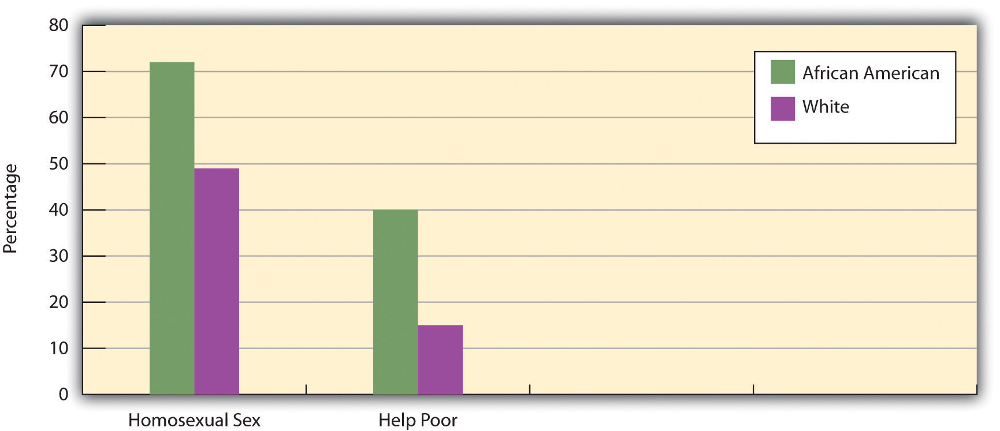

The discussion of theories of power and society began to examine the U.S. political system. Let’s continue this examination by looking at additional features of U.S. politics. We start with political ideology and political parties.
Two central components of modern political systems are (a) the views that people hold of social, economic, and political issues and (b) the political organizations that try to elect candidates to represent those views. We call these components political ideology and political parties, respectively.
Political ideologyViews on social, political, and economic issues. is a complex concept that is often summarized by asking people whether they are liberal or conservative. For example, the GSS asks, “I’m going to show you a seven-point scale on which the political views that people might hold are arranged from extremely liberal to extremely conservative. Where would you place yourself on this scale?” For convenience’s sake, responses to this question in the 2008 GSS are grouped into three categories—liberal, moderate, and conservative—and displayed in Figure 14.2 "Political Ideology". We see that moderates slightly outnumber conservatives, who in turn outnumber liberals.
Figure 14.2 Political Ideology

Source: Data from General Social Survey, 2008.
This is a common measure of political ideology, but social scientists often advise using a series of questions to measure political ideology, which consists of views on at least two sorts of issues, social and economic. Social issues concern attitudes on such things as abortion and other controversial behaviors and government spending on various social problems. Economic issues, on the other hand, concern such things as taxes and the distribution of income and wealth. People can hold either liberal or conservative attitudes on both types of issues, but they can also hold mixed attitudes: liberal on social issues and conservative on economic ones, or conservative on social issues and liberal on economic ones. Educated, wealthy people, for example, may want lower taxes (generally considered a conservative view) but also may favor abortion rights and oppose the death penalty (both considered liberal positions). In contrast, less educated, working-class people may favor higher taxes for the rich (a liberal view, perhaps) but oppose abortion rights and favor the death penalty.
We also see mixed political ideologies when we look at African Americans’ and whites’ views on social and economic issues. African Americans tend to be more conservative than whites on social issues but more liberal on economic concerns. This tendency is depicted in Figure 14.3 "Race and Attitudes on Social and Economic Issues", which shows responses to GSS questions on whether homosexual sex is wrong, a social issue, and on whether the government should reduce income differences between the rich and poor, an economic issue. African Americans are more likely than whites to take a conservative view on the social issue by thinking that homosexual sex is wrong but are more likely to take a liberal view on the economic issue by thinking that the government should reduce income inequality.
Figure 14.3 Race and Attitudes on Social and Economic Issues
Percentage saying that homosexual sex is always wrong and percentage saying that government should help the poor.
Source: Data from General Social Survey, 2008.
People’s political ideologies often lead them to align with a political partyAn organization that supports particular political positions and tries to elect candidates to office to represent those positions., or an organization that supports particular political positions and tries to elect candidates to office to represent those positions. The two major political parties in the United States are, of course, the Democratic and Republican parties. However, in a national poll in October 2009, 44% of Americans called themselves Independents, compared to 30% who called themselves Democrats and only 17% who called themselves Republicans. The number of Americans who consider themselves Independents, then, almost equals the number who consider themselves either Democrats or Republicans (Rich, 2009).Rich, F. (2009, November 1). The G.O.P. Stalinists invade upstate New York. The New York Times, p. WK8.
An important question for U.S. democracy is how much the Democratic and Republican parties differ on the major issues of the day. The Democratic Party is generally regarded as more liberal, while the Republican Party is regarded as more conservative, and voting records of their members in Congress generally reflect this difference. However, some critics of the U.S. political system think that in the long run there is not a “dime’s worth of difference,” to quote an old saying, between the two parties, as they both ultimately work to preserve corporate interests and capitalism itself (Alexander, 2008).Alexander, S. A. (2008, January 10). Socialists emerging as Democrats, Republicans lose voter confidence. American Chronicle. Retrieved from http://www.americanchronicle.com/articles/view/48507 In their view, the Democratic Party is part of the problem, as it tries only to reform the system instead of bringing about the far-reaching changes said to be needed to achieve true equality for all. These criticisms notwithstanding, it is true that neither of the major U.S. parties is as left-leaning as some of the major ones in Western Europe. The two-party system in the United States may encourage middle-of-the road positions, as each party is afraid that straying too far from the middle will cost it votes. In contrast, because several Western European nations have a greater number of political parties, a party may feel freer to advocate more polarized political views (Muddle, 2007).Muddle, C. (2007). Populist radical right parties in Europe. New York, NY: Cambridge University Press.
Some scholars see this encouragement of middle-of-the-road positions (and thus political stability) as a benefit of the U.S. two-party system, while other scholars view it as a disadvantage because it limits the airing of views that might help a nation by challenging the status quo (Richard, 2010).Richard, J. (2010, May 29). One cheer for the two-party system. OpEdNews. Retrieved from http://www.opednews.com/articles/One-Cheer-for-the-Two-Part-by-Jerome-Richard-100527-100148.html One thing is clear: in the U.S. two-party model, it is very difficult for a third party to make significant inroads, because the United States lacks a proportional representation system, found in many other democracies, in which parties win seats proportional to their share of the vote (Disch, 2002).Disch, L. J. (2002). The tyranny of the two-party system. New York, NY: Columbia University Press. Instead, the United States has a winner-takes-all system in which seats go to the candidates with the most votes. Even though the Green Party has several million supporters across the country, for example, its influence on national policy has been minimal, although it has had more influence in a few local elections.
Whether or not the Democratic and Republican parties are that different, U.S. citizens certainly base their party preference in part on their own political ideology. Evidence of this is seen in Figure 14.4 "Political Ideology and Political Party Preference", which shows the political ideology of GSS respondents who call themselves Democrats or Republicans. People’s political ideology is clearly linked to their party preference.
Figure 14.4 Political Ideology and Political Party Preference

Source: Data from General Social Survey, 2008.
Perhaps the most important feature of representative democracies is that people vote for officials to represent their views, interests, and needs. For a democracy to flourish, political theorists say, it is essential that “regular” people participate in the political process. The most common type of political participation, of course, is voting; other political activities include campaigning for a candidate, giving money to a candidate or political party, and writing letters to political officials. Despite the importance of these activities in a democratic society, not very many people take part in them. Voting is also relatively uncommon among Americans, as the United States ranks lower than most of the world’s democracies in voter turnout (International Institute for Democracy and Electoral Assistance, 2009).International Institute for Democracy and Electoral Assistance. (2009). Voter turnout. Retrieved from http://www.idea.int/vt/index.cfm
Increasing Voter Turnout in the United States
As the text discusses, the United States ranks low internationally in voter turnout. In 2008, about 133 million Americans voted in the federal elections. Although this number sounds impressive, it represented only about 57% of the voting-age population. Thus, only slightly more than half of Americans voted in 2008 despite the excitement produced by having the first African American, Barack Obama, on the national ticket for one of the two major political parties.
Why does the United States not rank higher in voter turnout? Although the text discusses voter apathy among Americans, other factors also make a difference. In this regard, the experience of other democratic nations provides guidance for increasing voter turnout in the United States, which trails these nations by a substantial margin.
Why is voter turnout so much higher in other democracies? Voting scholars emphasize that certain practices that make it easier or more difficult to register and vote can greatly influence voter turnout (Ellis, Gratschew, Pammett, & Thiessen, 2006).Ellis, A., Gratschew, M., Pammett, J. H., & Thiessen, E. (Eds.). (2006). Engaging the electorate: Initiatives to promote voter turnout from around the world. Stockholm, Sweden: International Institute for Democracy and Electoral Assistance. These practices include (a) allowing same-day voter registration versus requiring registration a month or more before an election, (b) having multiple voting days versus a single voting day, (c) having the election on a weekend or rest day versus a weekday or workday, (d) having or not having alternative voting procedures (e.g., mail-in voting), and (e) having more or fewer polling places. Nations differ in the extent to which they adopt and use practices that promote registration and voting, and they also differ in the degree to which they use voter information and advertising campaigns and other efforts to encourage voting. In general, these practices and efforts are more often found in other democracies than in the United States.
For example, New Zealand has a well-staffed and well-funded agency, the Electoral Enrolment Centre (EEC), that regularly engages in intensive publicity campaigns to encourage New Zealanders to register to vote. (Voter registration in New Zealand is compulsory, but voting itself is not.) The EEC systematically evaluates the effectiveness of its publicity efforts to ensure that they are as effective as possible, and it makes changes as needed for future efforts. To encourage registration among young people and members of certain ethnic groups that traditionally have low voter registration rates, the EEC visits their households with the hope that personal contact will be more effective in encouraging them to register. The EEC also provides provisional registration for 17-year-olds, who fill out a form with information that is automatically transferred to the official registration list when they turn 18, the New Zealand voting age. The EEC’s many efforts combine with compulsory registration, even though no one has ever been prosecuted for not registering, to produce a voter registration rate of about 95%, one of the highest rates of any democracy (Thiessen, 2006).Thiessen, E. (2006). Making the electoral process as easy as possible: Elections New Zealand. In A. Ellis, M. Gratschew, J. H. Pammett, & E. Thiessen (Eds.), Engaging the electorate: Initiatives to promote voter turnout from around the world (pp. 28–30). Stockholm, Sweden: International Institute for Democracy and Electoral Assistance.
In Sweden, a national agency called the Election Authority (translated from its Swedish name, Valmyndigheten) produces information campaigns before each election to educate eligible voters about the candidates and issues at stake. Advertisements and other information are transmitted through television, radio, and Internet outlets and also sent via email. A special effort is made to distribute materials at locations where large groups of people routinely gather, such as businesses, shopping areas, and bus and train stations. Special effort is also made to reach groups with traditionally lower voting rates, including young people, immigrants, and people with disabilities (Lemón & Gratschew, 2006).Lemón, K., & Gratschew, M. (2006). Educating the voter about the electoral process: The Swedish election authority. In A. Ellis, M. Gratschew, J. H. Pammett, & E. Thiessen (Eds.), Engaging the electorate: Initiatives to promote voter turnout from around the world (pp. 32–34). Stockholm, Sweden: International Institute for Democracy and Electoral Assistance. Elections in Sweden occur on the third Sunday of September; because fewer people work on Sunday, it is thought that Sunday voting increases voter turnout.
Although many factors explain why voter turnout varies among the democracies of the world, many scholars think that the practices and efforts just listed help raise voter turnout. If so, the United States may be able to increase its own turnout by adopting and/or increasing its use of these practices and efforts. In this regard, the United States has much to learn from other democracies.
Not only is U.S. voter turnout relatively low in the international sphere, but it has also declined since the 1960s (see Figure 14.5 "Trends in Voter Turnout in Nonpresidential Election Years"). One factor that explains these related trends is voter apathy, prompted by a lack of faith that voting makes any difference and that government can be helpful. This lack of faith is often called political alienationA lack of faith that voting makes any difference and that government can be helpful.. As Figure 14.6 "Trust in U.S. Government" dramatically shows, lack of faith in the government has dropped drastically since the 1960s, thanks in part, no doubt, to the Vietnam War during the 1960s and 1970s and the Watergate scandal of 1970s.
Figure 14.5 Trends in Voter Turnout in Nonpresidential Election Years

Source: Data from U.S. Census Bureau. (2009). Statistical abstract of the United States: 2009. Washington, DC: U.S. Government Printing Office. Retrieved from http://www.census.gov/compendia/statab.
Figure 14.6 Trust in U.S. Government

Source: Data from American National Election Study.
Yet it is also true that voter turnout varies greatly among Americans. In general, several sets of factors make citizens more likely to vote and otherwise participate in the political process (Burns, Schlozman, & Verba, 2001).Burns, N., Schlozman, K. L., & Verba, S. (2001). The private roots of public action: Gender, equality, and political participation. Cambridge, MA: Harvard University Press. These factors, or correlates of political participation, include (a) high levels of resources, including time, money, and communication skills; (b) psychological engagement in politics, including a strong interest in politics and a sense of trust in the political process; and (c) involvement in interpersonal networks of voluntary and other organizations that recruit individuals into political activity. Thus people who are, for example, wealthier, more interested in politics, and more involved in interpersonal networks are more likely to vote and take part in other political activities than those who are poorer, less interested in politics, and less involved in interpersonal networks. Reflecting these factors, age and high socioeconomic status are especially important predictors of voting and other forms of political participation, as citizens who are older, wealthier, and more educated tend to have more resources, to be more interested in politics and more trustful of the political process, and to be more involved in interpersonal networks. As a result, they are much more likely to vote than people who are younger and less educated (see Figure 14.7 "Age, Education, and Percentage Voting, 2008").
Figure 14.7 Age, Education, and Percentage Voting, 2008

Source: Data from U.S. Census Bureau. (2009). Statistical abstract of the United States: 2009. Washington, DC: U.S. Government Printing Office. Retrieved from http://www.census.gov/compendia/statab.
The lower voting rates for young people might surprise many readers: because many college students are politically active, it seems obvious that they should vote at high levels. That might be true for some college students, but the bulk of college students are normally not politically active, because they are too busy with their studies, extracurricular activities, and/or work, and because they lack sufficient interest in politics to be active. It is also true that there are many more people aged 18 to 24 (about 30 million), the traditional ages for college attendance, than there are actual college students (11 million). In view of these facts, the lower voting rates for young people are not that surprising after all.
Felony Disenfranchisement
As the text discusses, one of the fundamental principles of a democracy is a right to vote. Political scholars consider voting and other forms of political participation as important activities in their own right but also as effective means to help integrate people into a society and to give them a sense of civic responsibility. Some scholars thus mourn a decline they perceive in civic engagement, as they feel that this decline is undermining social integration and civic responsibility.
For these reasons, the disenfranchisement (deprival of voting rights) of convicted felons has attracted much attention in recent years, as most states have laws that take away the right to vote if someone has been convicted of a felony: 48 states prohibit felons from voting while they are incarcerated, with only Maine and Vermont permitting voting while someone is behind bars. Felony disenfranchisement often continues once someone is released from prison, as 35 states prohibit voting while an offender is still on parole; two states, Kentucky and Virginia, prohibit voting permanently for anyone with a felony conviction. According to The Sentencing Project, a nonprofit organization advocating for sentencing reform, about 5.3 million Americans cannot vote because they have felony convictions. Because felons are disproportionately likely to be poor and African American or Latino, felony disenfranchisement has a disproportionate impact on the African American and Latino communities. An estimated 13% of African American men cannot vote for this reason.
Two pioneering scholars on felony disenfranchisement are sociologists Jeff Manza and Christopher Uggen, who documented the impact of felony disenfranchisement on actual election outcomes. They found that felony disenfranchisement affected the results of seven U.S. Senate elections and led to a Republican majority in the U.S. Senate in the early 1980s and then again in the mid-1990s. They also found that felony disenfranchisement almost certainly affected the outcome of a presidential election. In 2000, George W. Bush was declared the winner of the presidential election in Florida, and thus of the whole nation, by only 537 votes. An estimated 600,000 felons were not allowed to vote in Florida in 2000. They were disproportionally African American and would thus have been very likely to vote for Bush’s opponent, Al Gore, if they had been allowed to vote. Felony disenfranchisement thus affected the outcome of the 2000 presidential election and the course of U.S. domestic and foreign policy in the ensuing years.
In documenting the impact of felony disenfranchisement on actual elections, the research by sociologists Manza and Uggen helped underscore the need to reform felony disenfranchisement laws. Once again, sociology is helping make a difference. (Manza & Uggen, 2008; The Sentencing Project, 2010)Manza, J., & Uggen, C. (2008). Locked out: Felon disenfranchisement and American democracy. New York, NY: Oxford University Press; The Sentencing Project. (2010). Felony disenfranchisement laws in the United States. Washington, DC: Author.
Race and ethnicity also influence voting. In particular, Asians and Latinos vote less often than African Americans and whites among the citizen population. In 2008, roughly 65% of African Americans and 66% of non-Latino whites voted, compared to only 48% of Asians and 50% of Latinos (File & Cressey, 2010).File, T., & Cressey, S. (2010). Voting and registration in the election of 2008 (Current Population Report P20-562). Washington, DC: U.S. Census Bureau. The voting percentage for African Americans and Latinos was the highest for these groups since the Census Bureau began measuring citizens’ voting in 1996, possibly because of the presence of Barack Obama, who considers himself an African American, on the Democratic ticket.
The impact of age, race/ethnicity, education, and other variables on voting rates provides yet another example of the sociological perspective. As should be evident, they show that these aspects of our social backgrounds affect a very important political behavior, voting, even if we are not conscious of this effect.
From 2003 through 2008, political action committees (PACs)An organization formed by special-interest groups to raise and spend money on behalf of political campaigns and various political issues., organizations formed by special-interest groups to raise and spend money on behalf of political campaigns and various political issues, contributed more than $1 billion to the election campaigns of candidates for Congress (U.S. Census Bureau, 2010).U.S. Census Bureau. (2010). Statistical abstract of the United States: 2010. Washington, DC: U.S. Government Printing Office. Retrieved from http://www.census.gov/compendia/statab In 2008 and 2009, special-interest groups spent more than $6.3 billion to lobby Congress, the White House, and various federal agencies. They employed some 14,000 lobbyists, who outnumbered members of Congress 27 to 1, on such issues as health care, military spending, and transportation (Center for Responsive Politics, 2009).Center for Responsive Politics. (2009). Lobbying database. Retrieved from http://www.opensecrets.org/lobbyists The top lobbying group in 2009 was the U.S. Chamber of Commerce, which spent more than $65 million to lobby Congress, federal agencies, and other parties; in second place was Exxon Mobil, which spent more than $21 million. The pharmaceutical and health products industry as a whole spent more than $200 million in 2009, while the insurance industry spent $122 million, oil and gas companies $121 million, electric and gas utilities $108 million, and business associations $93 million.
Dubbed the “influence industry,” these lobbying efforts have long been criticized as having too much impact on federal policy and spending priorities. It is logical to think that the influence industry spends these large sums of money because it hopes to affect key legislation and other policies. This expenditure raises an important question: are PACs, special-interest groups, and lobbying good or bad for democracy? This question goes to the heart of the debate between pluralist and elite theories, discussed earlier. Representatives of PACs and lobbying groups say it is important that elected officials hear all possible views on complex issues and that these organizations merely give money to help candidates who already think a certain way. Supporting this notion, public officials say they listen to all sides before making up their minds and are not unduly influenced by the money they receive and by the lobbying they encounter. For their part, pluralist theorists say PACs and lobbying groups are examples of the competing veto groups favored by the pluralist model and that no one special-interest group wins out in the long run (James, 2004).James, M. R. (2004). Deliberative democracy and the plural polity. Lawrence: University Press of Kansas.
Critics of the influence industry say that its impact is both large and unwarranted and charge that PACs, lobbyists, and the special-interest groups that fund them are buying influence and subverting democracy. Ample evidence exists, they say, of the impact of the influence industry on which candidates get elected and on which legislation gets passed or not passed. While special-interest groups for various sides of an issue do compete with each other, they continue, corporations and their PACs are much better funded and much more influential than the groups that oppose them (Clawson, Neustadtl, & Weller, 1998; Cook & Chaddock, 2009).Clawson, D., Neustadtl, A., & Weller, M. (1998). Dollars and votes: How business campaign contributions subvert democracy. Philadelphia, PA: Temple University Press; Cook, D. T., & Chaddock, G. R. (2009, September 28). How Washington lobbyists peddle power. The Christian Science Monitor. Retrieved from http://www.csmonitor.com/USA/Politics/2009/0928/how-washington-lobbyists-peddle-power These concerns motivated sharp criticism of a U.S. Supreme Court decision in January 2010 regarding election advertisements by corporations and unions. The decision permitted corporations and unions to use money from their general funds to pay for ads urging the public to vote for or against a particular candidate. Because corporations have much more money than unions, the ruling was widely seen as being a procorporation one. The majority decision said that prohibitions of such advertising violated freedom of political speech by corporations and unions, while the minority decision said the ruling “threatens to undermine the integrity of elected institutions across the nation” (Vogel, 2010).Vogel, K. P. (2010, January 21). Court decision opens floodgates for corporate cash. Politico. Retrieved from http://www.politico.com/news/stories/0110/31786.html